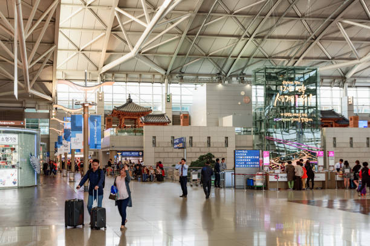
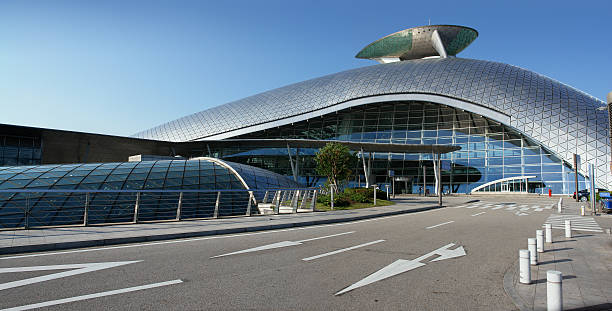
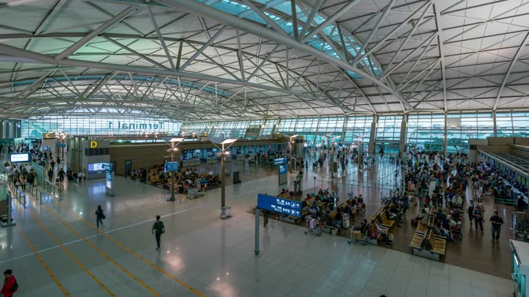
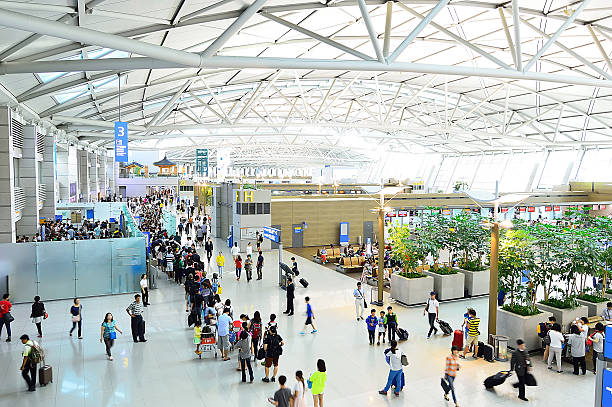
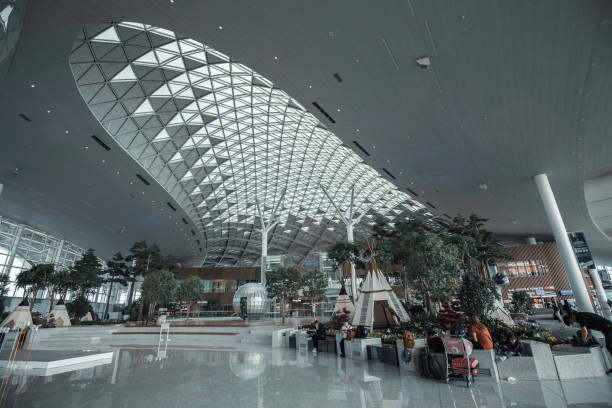

Letisko Inčchon, ktoré sa nachádza neďaleko Soulu, privítalo v roku 2019 viac ako 71 miliónov cestujúcich. Čas potrebný na colné odbavenie je len 12 minút pre prilietajúcich cestujúcich a 19 minút pre odlietajúcich cestujúcich. Kľúčom k pohodliu na letisku Inčchon je poriadok a čistota. Na letisku bolo všetko premyslene navrhnuté vrátane rôznych možností zábavy. Nájdete tu sedem záhrad, klzisko, kasíno, dve kiná a centrum videohier. O pohodlie cestujúcich sa starajú bezplatné sprchy, salóny krásy a viac ako 90 bezcolných obchodov.
Fakty o letisku
- Z medzinárodného letiska Inčchon sa denne uskutočňuje viac ako 70 medzinárodných letov do 170 krajín.Z medzinárodného letiska Inčchon môžete navštíviť viac ako 35 miest s viac ako miliónom obyvateľov, ktoré sú vzdialené len 2 hodiny letu.
- Kľúčovou vlastnosťou medzinárodného letiska Inčchon je, že môžete letieť priamo do ktorejkoľvek krajiny.
- V budove letiska sa nachádzajú dve tradičné kultúrne sály: vo východnom a západnom krídle.
- Počas čakania môžu tranzitní cestujúci využiť prehliadky okolia letiska, centra mesta Inčchon a centra Soulu, ktoré sú buď bezplatné, alebo za malý poplatok.
- Ak sú cestujúci unavení a chcú si zdriemnuť alebo sa osprchovať a osviežiť, na letisku sa nachádza salón SPA on Air a kapsulový hotel DARAK HYU s bezplatnými sprchami. Môžete sa tu dobre vyspať za rozumnejšiu cenu ako v bežnom hoteli.
- Klzisko Ice Forest je pre cestujúcich na medzinárodnom letisku Inčchon otvorené 365 dní v roku.
Najlepšie fotografie letiska:




